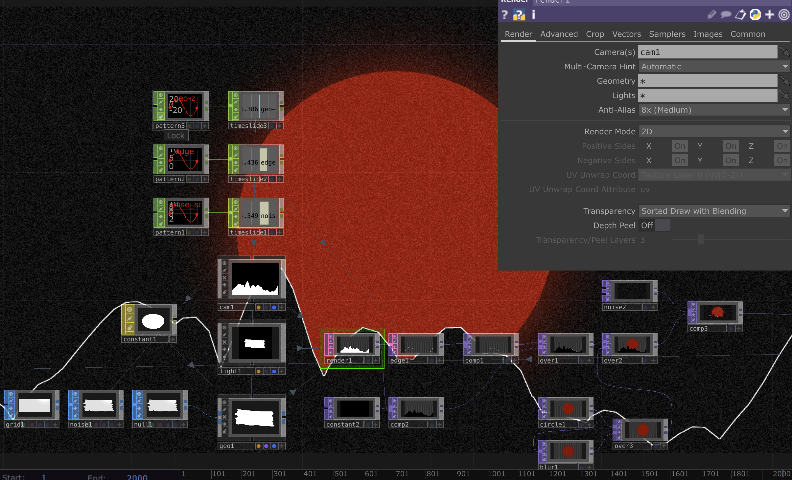
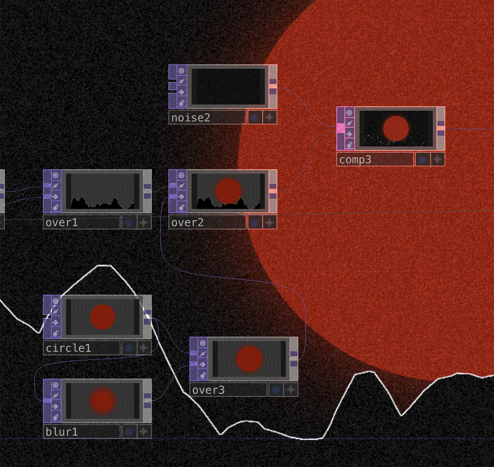
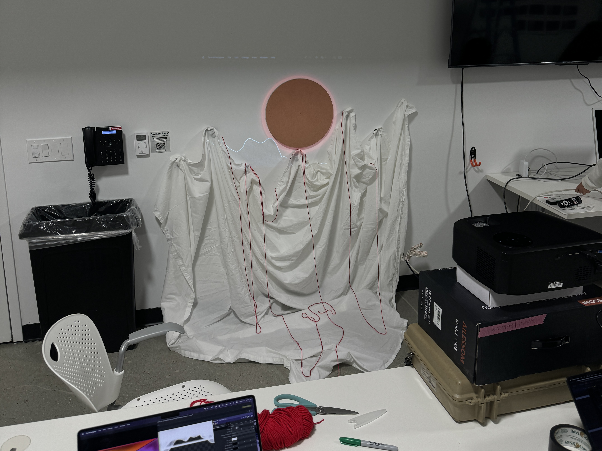
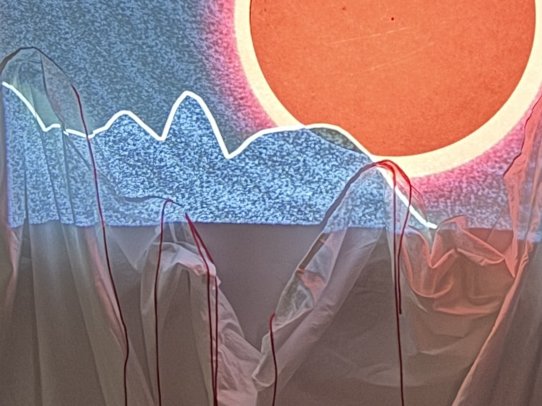
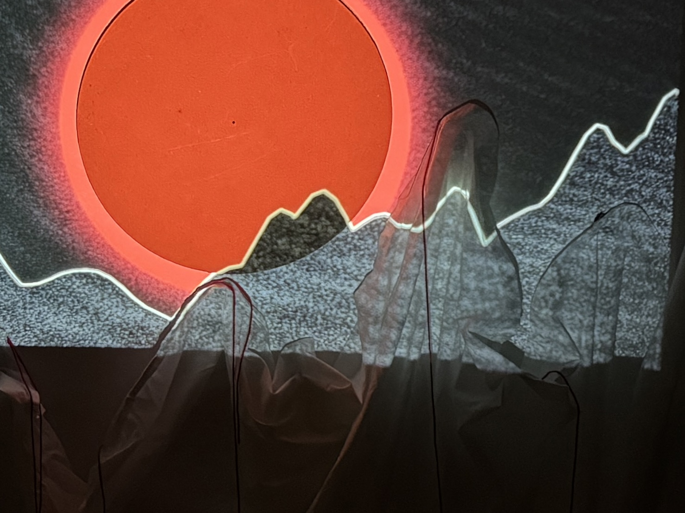

Project 3: The Sea Mirrors the Shining Moon Bright
TouchDesigner Development:
I would like to recreate some physical scene having some sense of the traditonal Chinese painting, but translating it into digital forms in a more contemporary aesthetic representation. Therefore, I simplified the aesthetic elements into two flat parts: an outstanding red sun and the endless looping mountains, or rivers, leaving some space for imagination. To make them as simple and visually attractive as possible, I tried to play with some geometrics, adding noise to a plane and adjusting its 3D position. With the 'edge' comp, I got the outline of the geometric shape:
To add a bit texture onto the whole scene, I tried to add noise:
Projecting Setup:
Because the scene I created was based on real-world assets, I would like to add another layer of the representation for these assets as an installation. I imitate the shape of the sun and the mountains with materials having outlines similar to the shapes. By re-doing the scene in the physical place without having real items related to the topic, the installation was creating a more comprehensive atmosphere. As mentioned by Maxim, the texture added to the physical 'mountains' by the noise comp from touchdesigner worked well.
Some Image Shootings:
 